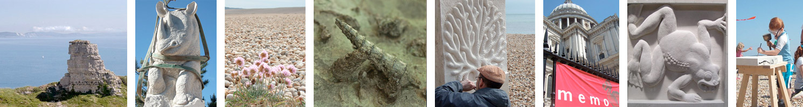
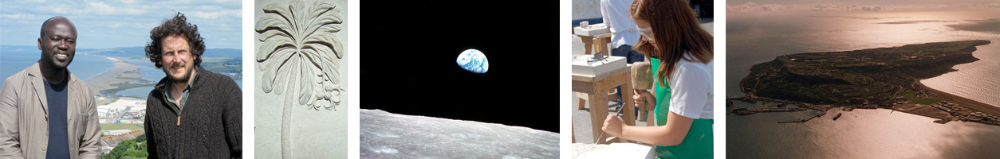

Mass Extinction Monitoring Observatory
Life is a cosmic rarity. Though we have looked into the far reaches of space, it is here on Earth that all known life is to be found. The totality of this glittering web of life is known as ‘biodiversity’. We are a part of it, depend upon it in our every endeavor. But it is now under great threat.
We are a collaboration of artists and scientists dedicated to raising a global beacon for biodiversity. MEMO is an educational charity based in the UK, in partnership with the E.O. Wilson Biodiversity Foundation in the US.
We are tipping on the brink of a mass extinction event akin to that which wiped out the dinosaurs 65 million years ago. Part of the challenge today is to capture the public imagination, to educate and inspire to action, so that we may grasp the opportunity to shape a future for the benefit of all species, including our own.
The mission of MEMO is exactly that - to inform, to educate, to inspire. At the heart of the Project will be an architectural icon, in the age-old tradition of Stonehenge, the Pyramids and the Taj Mahal. MEMO will be a stunning stone structure, spiralling out of ancient cliffs.
MEMO will be sited on the Isle of Portland, ‘semi-detached’ from the south coast of Britain. This is part of the ‘Jurassic Coast’, a Geological World Heritage Site whose fossil-rich cliffs chart 180 million years of the history of life. The stones of MEMO, quarried from these same cliffs, will embody the images of all species to have gone extinct in modern times, carved by sculptors all over the world.
The interior of MEMO, and the permanently restored quarry landscape which will surround it, will become the living arena for projection and performance, exhibition and installation, conference and festival. On-site and on-line, all programmes will link to schools and conservation initiatives all over the world.
The extraordinary design has been gifted to the project by internationally acclaimed architect David Adjaye, and the spectacular cliff-top site has been secured from the Crown Estate. Full planning permission has been granted.
Please join us
Help us build it
Join the movement
History is written in stone, the future is still ours to shape.


“Ever since life first appeared on this planet, the evolution of some and the extinction of other species has been the inevitable and natural consequence. However, it is only since the human population developed industrial production and reached such a huge total that the extinction of the more vulnerable wild species of plants and animals has reached crisis proportions. Fully comprehending the significance of this is difficult, and communicating it effectively, is even harder.
The MEMO Project is an imaginative proposal to bring this critical situation to the understanding of a wider audience. The creation of a memorial to extinct species in the form of a gallery on the Isle of Portland in the vicinity of the Jurassic Coast, is an imaginative way of drawing public attention to the destructive influence of modern human society, and to encourage an informed culture of respect for the natural world.”
HRH The Duke of Edinburgh, KG KT
“MEMO is an outstanding project... a timely and imaginative response to addressing an issue of vital global importance. The Society has done well to endorse MEMO – it is a project which will and must succeed.”
Sir David Read
FRS Vice President and Biological Secretary, the Royal Society, 2003-2008, and MEMO Patron
“I was deeply moved on learning of this brilliant, profound, and ultimately humanitarian enterprise.”
Professor E.O. Wilson
MEMO Patron
“The current loss of biological diversity on earth is one of the greatest crises of our time with profound long-term consequences for mankind. One of the reasons that it continues unabated is a lack of public awareness of the issue and the value that biological systems provide including everyday fundamentals like fresh air, clean water and fertile soil. We urgently need to rectify this. And that is why MEMO is so important to the world. Combining art, science and public participation, MEMO is a truly unique educational tool of global significance.”
Ahmed Djoghlaf
Former Executive Secretary of the UN Convention on Biodiversity
“The potential cultural, economic and educational benefits are huge.”
Tom Grainger
Outgoing CEO, Weymouth and Portland Borough Council 2010
“The Memo Project is beautiful, it is powerful and its message is simple. Its creation will provide a global icon to our need to respect and protect the natural world and will ask, in its mute testament whether we are worthy of the name we gave ourselves; Homo sapiens – the wise hominid.”
Tim Smit KBE
CEO and co-founder of the Eden Project and Principal Advisor to MEMO
“I went home and showed all my fossils I found to my family and told them that I carved on a massive block to go on an island and it’s going to stay there forever.”
Isabelle
Feedback on MEMO activities on Schools Day at the Lyme Regis Fossil Festival, 2010
“Some ‘difficult’ students suddenly became engaged in the stonework and stayed at lunch and after school. The presence of MEMO has been brilliant.”
Non-teaching member of staff
Feedback from MEMO residency at Royal Manor Arts College, Portland, 2010
Endorsed by


Supported by


Celebrating